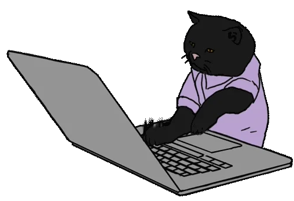

mulEEG
Official implementation of our paper "mulEEG: A Multi-View Representation Learning on EEG Signals".
Learn more , This is Likith!
, This is Likith! 
I'm currently working as a Research Associate applying deep learning in the field of biosignals. 
Specialising in the areas of self-supervised systems, explainable AI and efficient deep learning on multi-modal bio signals.

A research wing of IIIT, Hyderabad with focus on data driven technologies, responsible for applying deep learning in the field of biosignals to create a broader impact in healthcare.

Had worked in the division of Global Business Services with business client, a multinational oil and gas company, Shell.

A list of projects of mine worth looking at.
Official implementation of our paper "mulEEG: A Multi-View Representation Learning on EEG Signals".
Learn more
Official implementation of our IEEE:SMC 2021 paper "IMLE-Net: An Interpretable Multi-level Multi-channel Model for ECG Classification".
Learn moreControlling a drone using a Brain Computer Interface.
Learn moreHere are the list of research publications of mine you can have a look at.